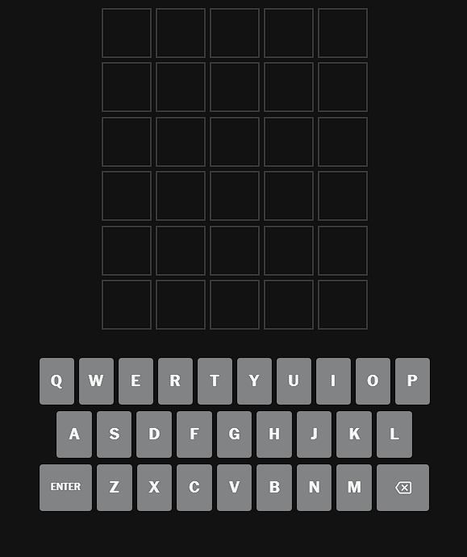
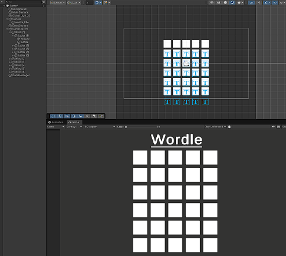
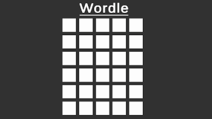
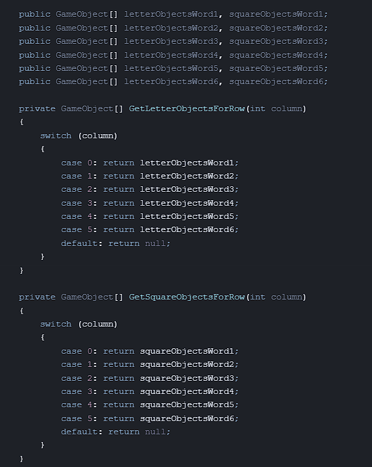
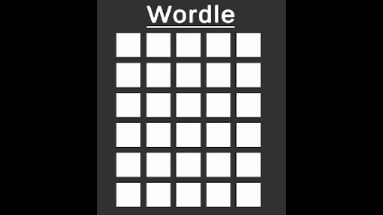
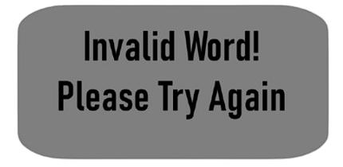

New York Times Wordle Project
Start Date: August 20th, 2025 - Finish Date: September 3rd, 2025
Summary
Wordle has a ton of error checking and logic behind how it works, which made this a really fun and challenging Unity project to learn from. It took me a bit longer than usual since
I didn’t have a lot of free time over the last two weeks, but I finally wrapped it up.
There are still a couple of small bugs — for example, the first word always shows up as “ERROR” since it’s not randomizing properly, and a few sprite issues pop up sometimes. But even with those small problems,
I’m really proud of how it turned out. This is actually the first game I’ve made where I find the finished result genuinely fun to play. Up until now, most of my projects have been smaller practice activities.
Notes While Making This Game
Must Haves
- Word input system
- Feedback for each letter (correct, correct but wrong spot, or incorrect) just like the real game
Might Haves
- Word verification (checking if the word is in the dictionary)
Object Layout
The layout needed to copy the real Wordle game — 6 guesses, 5 letters each, all displayed in a grid.
The first image (on the left) shows the actual New York Times Wordle layout, while the second image (on the right) shows my current implementation.
I set it up so each word is an object with 5 child objects, each representing a Letter (1–5). Each Letter has two children:
- Square: background, changes color depending on correctness.
- Letter: the actual letter (A–Z).
The colors will need to follow Wordle’s logic:
- Green: correct letter in the right spot.
- Yellow: letter exists but in the wrong spot.
- Grey: letter not in the word.


Input System
I started with tracking user input. Letters get stored in a 5-character array, backspace removes the latest letter, and no special characters or numbers are allowed. This array is displayed on the screen in the correct row.
The script handling both input and game state is stored in a separate GameManager object.
When the player hits Enter, the word gets locked in, feedback is given (green/yellow/grey squares), and the game moves to the next row. To handle rows, I used arrays of GameObjects for both letters and squares with a switch case getter to track which row the player is on:

The game now needs to accept words when the user presses enter and goes to the next column so they can enter their second guess.
Also when a user enters a word it should lock their guess in and tell them which letters were correct, incorrect, or in the wrong location.
I made it so when the user presses enter it switches to the next row, since it's a whole different object I decided to make an array of objects for each word with a switch case in a getter to quickly get which row the user is on.
There's one for both the letters and squares since both need to be tracked. This might not be the best way to approach this but it works pretty well.

Also now that you can switch column with enter I added some restrictions to this, the word both has to be 5 letters long, a boolean value called “wordIsValid” has to be true,
this is so later down the line I can reference the users word with words in a dictionary to make sure the word is real.
Also as the user switches row the word that was just entered needs to be reviewed, so I added some checks which compare the users word to the goal word letter by letter.
The first check compares each of the users letters to the goal word letters, if any of them are correct and in the correct spot as the goal word the square behind it should turn green.
After that if it doesn't turn green the second check is if the letter is anywhere else in the goal word, if it is the square should turn yellow.
Finally if the letter is not in the goal word at all it should turn the square grey.

If the user presses enter while the word is not valid or is not 5 letters long the user should be told to try again.

The project now has basic error handling so I then added the ability to restart the game. It currently works on a timer so once the game is completed the user has to wait 10 seconds then a new board with a new word is created.
10 seconds might change or be skippable later since it's kind of long but for now ten seconds works fine.
Word Generation
You cannot play multiple games with one word so I now need a script to randomize the word every game. So I made another script for word generation which will have a word bank generated by ChatGPT.
The script will pick a random number between 1 and the index of the list then save the word at that index. I'm going to add the same error checking on the word bank as I do the user to make sure it didn't add some unusable words.
So the word has to be exactly 5 letters long and verified by the same dictionary API as I will use for the users checking.
If the AI generated word is not valid then it will reroll it. I am doing this instead of manually checking the word bank because it's currently over 600 words and possibly will grow.
Now that the words are being randomly generated and the game loops I now need to finish the word verification. I decided to use “Free Dictionary API”
to check each word the user inputs to keep them from cheating and using gibberish. I also added the same checks to the random word generator to keep it from creating a word the user cannot even guess.

Final Touches
The game is now fully playable with random word generation, error checking, restart logic, and dictionary verification. I even added a small feature to track your high score (how many you can guess in a row). The only remaining issue is that the very first word always shows up as the same word which is ironically “ERROR” due to a bug in randomization. After that, every word is different and works properly. Overall, I’d say the project is complete — and for the first time, I’ve got a game where the finished product is actually fun to play.